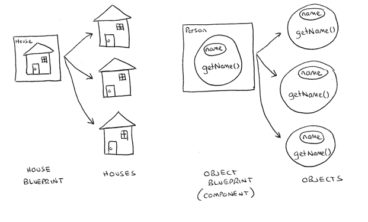

When you write code for an object oriented application you are creating components. When you run your application your components are used as "blueprints" to create objects.
So you can think of components as instructions on how to create many similar objects, which is similar to how blueprints for a house could be used to build many similar houses.

In the diagram we see one house blueprint on a piece of paper, which is used to create three lovely houses. We also see our object blueprint on a piece of paper (i.e. our component) which is used to create three separate objects.
Our component defines a private internal variable called name and a function getName(). Notice that this results in each of our objects having their own personal private name variable and getName() function.
Sometimes you may only need one object of a particular kind in your application, such as an object that knows how to authenticate users, and other times you may need more than one of a kind of object, such as having one object for every user currently logged into your system. Generally, however, components are used to create many objects.
ColdFusion provides several techniques for creating objects including the <cfinvoke> tag, the <cfobject> tag and the createObject() function.
The <cfinvoke> tag is used to execute a function on a component. Let's look at a common example of how <cfinvoke> is used:
{% highlight cfm %}This code does the following
The main idea to note here is that the object is created and discarded in the one step.
There is a bit more to this tag but this is a good example of common usage.
The <cfobject> tag is different in that it is used to create objects and not discard them immediately.
{% highlight cfm %}This example takes the following steps
A "reference" is essentially handle that lets you "hold onto" an object once it has been created. This reference can be given any name you like, such as "myPerson". Once you have a reference to an object you can then call whatever functions you need on that object.
So <cfobject> allows us to write code such as:
{% highlight cfm %}As with <cfinvoke> there is much more to this tag than this simple example.
The createObject() function is very similar to <cfobject> in that its purpose is to create objects and provide you with a reference to them for further use.
{% highlight cfm %}This is identical to the <cfobject> example above:
And then using our object:
{% highlight cfm %}The tag based techniques have particular uses, but typically you should use the createObject() function. For simple component usage the createObject() function can perform the behaviour of both the cfinvoke and cfobject tag.
cfinvoke: Executes functions on an object.
cfobject: Creates an object and returns a reference.
createObject: Creates an object and returns a reference and allows you to execute a function immediately on that object.
This code:
a) Creates a new object based on the Person.cfc component
b) Immediately calls the function called init() which performs some object initalisation.
c) Places a "reference" to that object in the myPerson variable.
We have previously discussed that objects are conventionally initialised using an init() function.
The cfinvoke and cfobject tags provide no convenient syntax for initialising objects with an init() function.
Creating and initialising objects can only be conveniently done using the createObject() function:
{% highlight cfm %}It is important to be aware that object creation in Adobe ColdFusion 8 (and earlier) can be very slow. The performance of object creation is dependent on several factors such as the number of functions within the object as well as the number of function calls that occur during the object's initialisation (e.g., function calls that may occur within a component's init() function).
This fact has very important consequences for object oriented development:
1) Firstly, any activity that will generate a large number of objects should typically be avoided. This includes reading many records from a database and converting them all to objects, which is the typical approach used in other object oriented languages.
2) Another consideration is that you may not be able to be very fine-grained in your object creation. I.e., you may not be able to have lots of little objects being created, you may need to find alternate techniques in these situations.
ColdFusion 9, Railo and Blue Dragon have better object creation performance than Adobe ColdFusion 8.
Each object that you create is referred to as an instance of that object.
For example, if you were developing an application with products and a shopping cart, you may say that for each customer who visits your site they only have one instance of a shopping cart object, however they may have many instances of a Product object that can be placed into the shopping cart.
Each instance of an object is a separate copy of the object that maintains its own internal state.